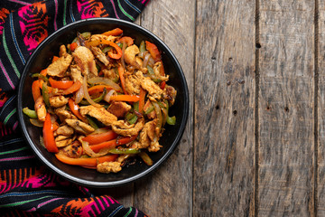

Chicken Fajitas
Sizzling chicken fajitas are a flavorful and spicy delight. Marinated chicken breast, sautéed with bell peppers and onions, creates a savory aroma that's impossible to resist. Serve with warm flour tortillas, sour cream, and salsa for a delicious and satisfying meal. Whether you're in the mood for a quick weeknight dinner or a festive gathering, chicken fajitas are always a crowd-pleaser. With a sprinkle of cilantro and a squeeze of lime juice, this dish is sure to become a favorite!
Ingredients:
- 1 lb boneless, skinless chicken breasts
- 1/2 cup sliced bell peppers
- 1/2 cup sliced onions
- 2 cloves garlic, minced
- 1 tablespoon olive oil
- Salt and pepper to taste
Instructions:
- Heat the olive oil in a large skillet over medium-high heat.
- Add the chicken to the skillet and cook until browned, about 5-7 minutes.
- Add the bell peppers and onions to the skillet and cook until tender, about 5 minutes.
- Add the garlic to the skillet and cook for 1 minute.
- Season with salt and pepper to taste.